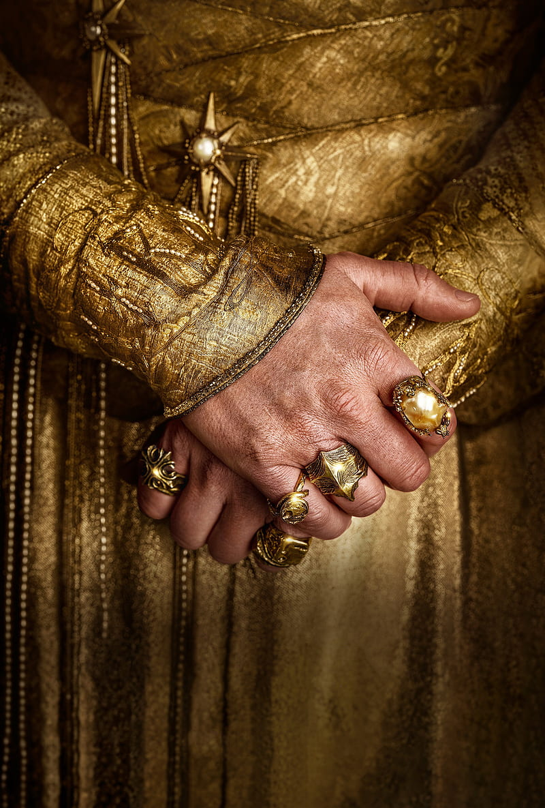
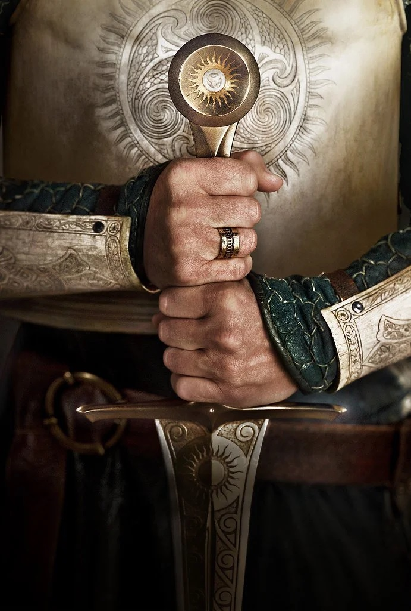

Principais Núcleos
-
Anãos

Descrição
Anões são uma raça de seres que habita Arda, a Terra pré-histórica fictícia que inclui o continente da Terra Média, nas obras fictícias de J. R. R. Tolkien. São geralmente ferreiros ou mineradores, inigualáveis até mesmo frente aos elfos em algumas de suas artes.
-
Elfos
Descrição
Autodenominados Quendi, são uma raça que, juntamente aos homens formam os "Filhos de Ilúvatar". Os Elfos são descritos como altos e belos, e são imortais, pelos menos enquanto o Mundo, chamado Arda, existir. Não envelhecem nem adoecem, e se forem mortalmente feridos ou se sofrerem um grande desgosto seu corpo morre, mas seu espírito sobrevive.
-
Numenorianos
Descrição
Por terem prestado assistência aos Elfos e Valar ao final da Primeira Era, os Edain foram recompensados com uma nova terra para governarem. Númenor, uma ilha no formato de uma estrela de cinco pontas e que ficava a muitas milhas de distância dos males da Terra-média. Os Numenorianos também tiveram sua vida prolongada em relação aos homens comuns.